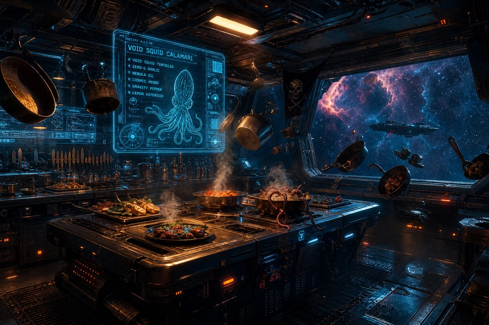
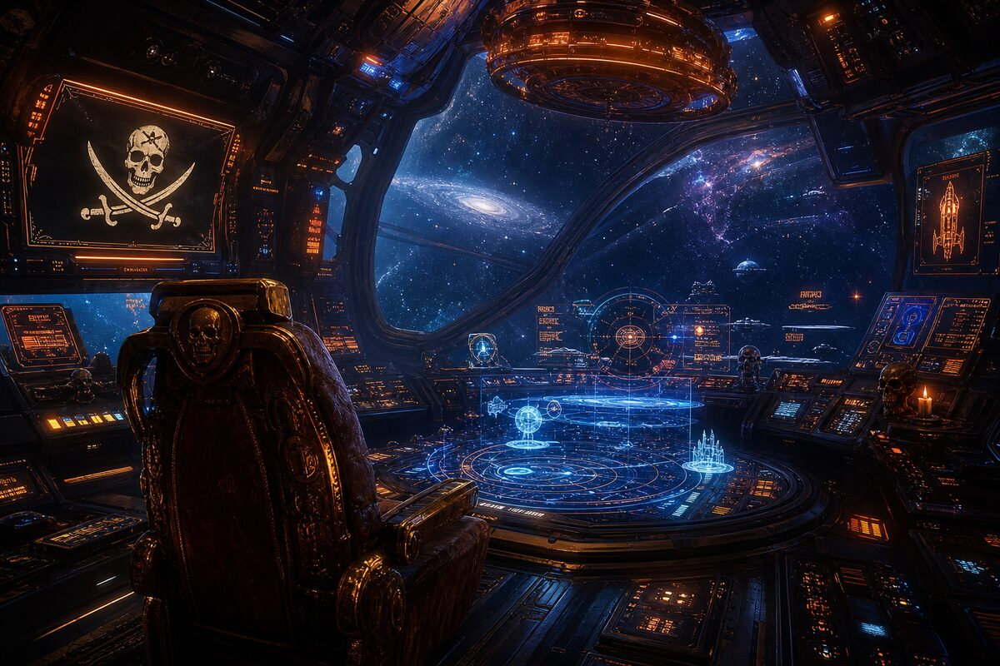
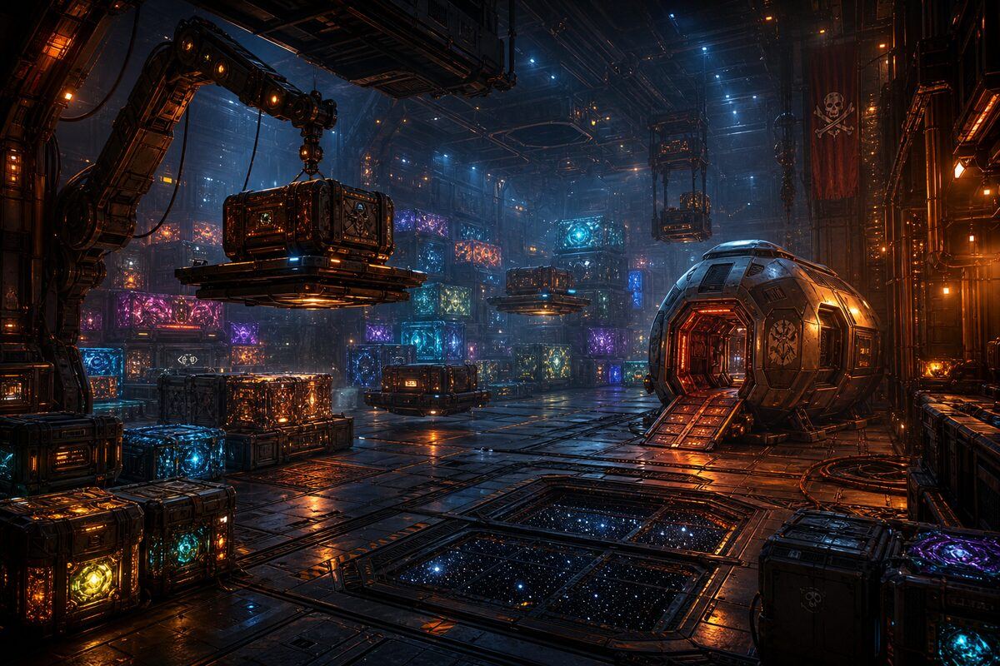
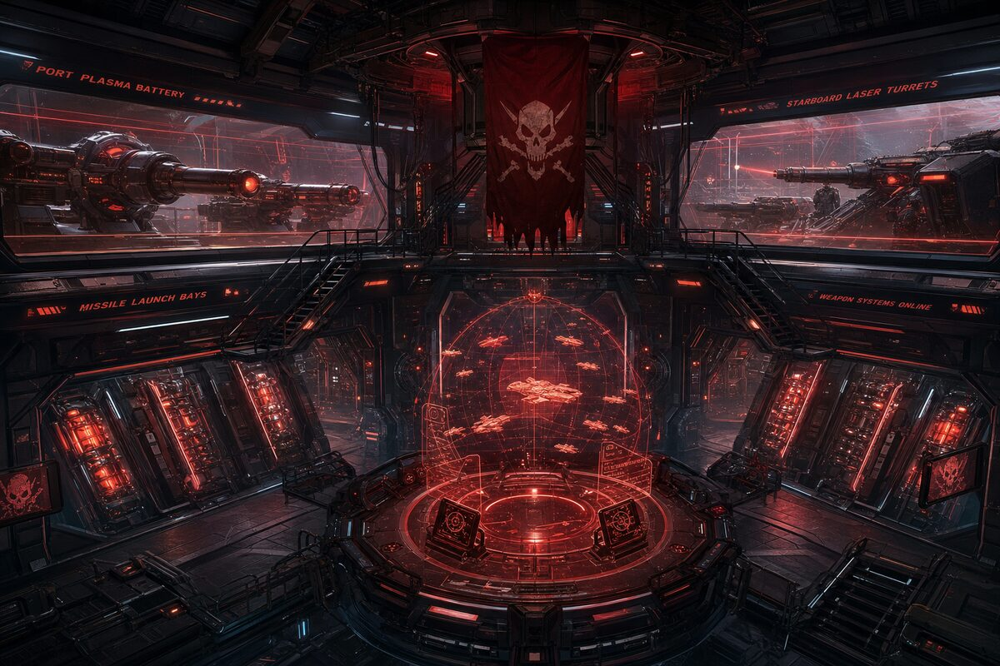
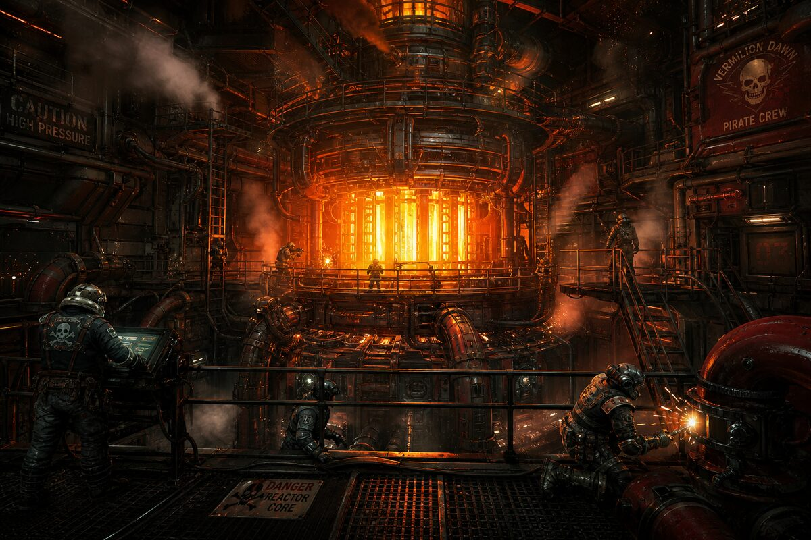
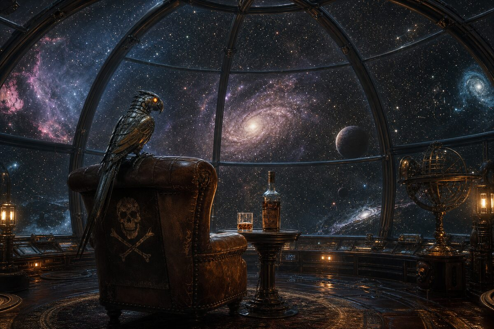

The Orange. Free. Against radiation. Against scurvy. Against the void between stars.
Same orange, different century. Same price: nothing. Always nothing.

The pots float. The knives are magnetic. The stew drifts in perfect spheres between the burner and the bowl. Long John Silver moves through the galley on a prosthetic leg that clicks against the hull plates — the same rhythm as on the Hispaniola, just with less gravity and more purpose. The parrot sits on his shoulder, mechanical now, eyes glowing orange, still screaming "Pieces of eight!" — except the pieces are cryptocurrency and nobody laughs because it's accurate.

The bridge of the Hispaniola II is a cathedral of holographic deception. Star charts rotate slowly in the air — some accurate, some deliberately wrong, planted by Silver for the crew to find. The captain's chair sits empty most of the time because Captain Smollett prefers standing. Silver prefers the galley. But when decisions are made, everyone knows which room they're actually made in.
The ship's AI is called FLINT. It was named after a dead pirate and a living parrot. It answers to both. It trusts neither crew nor captain. It was programmed by Jim Hawkins, who by now understands that the best code is the kind that doesn't trust its own author.

Crates of alien cargo stacked high under anti-gravity clamps. Some glow. Some hum. One — the one Silver never lets anyone open — vibrates at a frequency that makes the parrot go silent. That's the one worth killing for. That's the one Silver will trade Jim's life for. Or trade his own life to protect Jim from. Depends on the day. That ambiguity is the engine of the whole voyage.

Rows of plasma turrets line the hull. Israel Hands — now a targeting AI subroutine — controls them all. He's more accurate dead than he ever was alive. The targeting hologram in the center of the deck shows enemy ships as red dots, friendly ships as blue dots, and ships whose allegiance depends on who's paying as orange dots. There are always more orange dots.
Silver never comes to the weapons deck. He doesn't need to. The cook who controls the food controls the crew. The crew controls the guns. The math is simple.

The reactor core burns orange at the heart of the ship. Always orange. The engineers don't know why — it should burn blue at this fuel ratio. Silver knows why. He changed the fuel mix on Day 3. Nobody asked. The parrot knows. The parrot always knows.
The engine room is where Jim Hawkins goes when he needs to think. The vibration helps. The noise drowns out the voice in his head — the one that sounds like Silver, the one that says "you're more like me than you want to be, Jim."

The glass dome at the top of the ship. A 360-degree view of the cosmos. One worn leather chair — the only soft thing on the entire vessel. A bottle. A glass. The mechanical parrot perched on the arm, eyes dimmed to a soft glow. This is where Silver comes at 0300 ship time, when the crew sleeps and the AI runs minimal. He doesn't look at the stars. He looks at the space between them. That's where the treasure is. That's where it always was.
Jim found him here once. Didn't say anything. Sat on the floor next to the chair. They watched a nebula die together. Neither mentioned it again. That's the whole story of Silver and Jim, really. One chair. One floor. One dying light. And the silence where the truth lives.
The storage pod where the ration apples drift in perfect spheres, preserved in zero-gravity suspension. Jim floated in for a snack. He floated out with the knowledge that half the crew planned to kill the other half. Same story, different century, different gravity. The apples are synthetic now. The betrayal is organic. Always has been.
Silver's voice carries through the ventilation system — the ship was designed that way. By Silver. Every whisper reaches the barrel. Every confession reaches Jim. Silver knows Jim is in there. Jim doesn't know Silver knows. Silver doesn't know Jim knows Silver knows. The recursion is the point.
Energy barriers instead of iron bars. The same cold. The same question: whose side are you on? The brig has held every member of the crew at least once — including Silver, including Jim, including Captain Smollett. The only one never locked in is the parrot. The parrot has the override code. Nobody questions this.
The Hispaniola II broadcasts on frequency 6.66 MHz — the pirate channel. The skull and crossbones is a holographic projection that appears on the hull when Silver gives the word. It's visible from 10,000 kilometers. It's beautiful. It's terrifying. It's the last thing you see before you choose: trade or fight.
Jim asked Silver once why he still used the old symbol. Silver said: "Because new things need old names, Jim. Otherwise nobody knows what they're looking at." That's AOS in one sentence. Silver just doesn't know it yet.